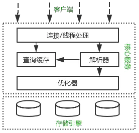
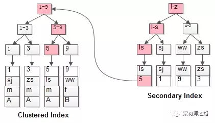

# Mysql 的逻辑结构

MySQL 逻辑结构分为三层：
- 客户端层：
负责连接处理，授权认证，安全服务等功能 - 核心服务层：
负责解析，分析，优化，存储过程，触发器，视图等功能 - 存储层：
负责数据的存储和提取，类似于 Java 接口的实现，Mysql 的执行器在执行 SQL 的时候只会关注 API 的调用，完全屏蔽了不同引擎实现间的差异。比如 Select 语句，先会判断当前用户是否拥有权限，其次到缓存（内存）查询是否有相应的结果集，如果没有再执行解析 sql，优化生成执行计划，调用 API 执行
# 事务的基本要素 (ACID)
- 原子性（Atomic）：事务是一个原子操作单元，其对数据的修改，要么全部执行，要么全部不执行
- 一致性（Consistency）：在事务开始前和结束后，数据库的完整性约束没有被破坏
- 隔离性（Isolation）：指一个事务的执行不能被其他事务干扰，即一个事务内部的操作及使用的数据对并发的其他事务是隔离的，并发事务之间互不干扰
- 持久性（Durability）：指一个事务一旦提交，事务对数据库的所有更改都会保存到数据库里
完整性约束
完整性约束 (Data Integrity) 是指数据的精确 (Accuracy) 和可靠性 (Reliability)。包括：
- 实体完整性 (行)：规定表的每一行在表中是惟一的实体。
- 域完整性 (列)：是指表中的列必须满足某种特定的数据类型约束，其中约束又包括取值范围、精度等规定。
- 参照完整性：是指两个表的主关键字和外关键字的数据应一致，保证了表之间的数据的一致性，防止了数据丢失或无意义的数据在数据库中扩散。
- 用户定义的完整性：不同的关系数据库系统根据其应用环境的不同，往往还需要一些特殊的约束条件。用户定义的完整性即是针对某个特定关系数据库的约束条件，它反映某一具体应用必须满足的语义要求。
# 事务的并发问题
- 脏读：
事务 A 读取了事务 B 更新的数据，然后事务 B 回滚了，那么 A 读到的就是脏数据 - 不可重复读：
在同一事务内，不同时间读取同一批数据可能会不一样，这批数据
可能会受到别的事务的影响，比如其他事务更新了这批数据并提交了，通常针对数据更新 - 幻读：
幻读针对数据插入，A 事务对一批数据进行修改但还没有提交，此时事务 B 插入了一批与 A 事务修改前的记录一样的记录进来，并且在事务 A 之前提交了，而这时，在事务 A 查询会发现好像刚刚做的修改并未起作用，但事实是事务 B 刚插入进来的数据，让用户感觉自己出现幻觉，这就叫做幻读
# MySQL 事务隔离级别
SQL 标准定义了四种隔离级别，MySQL 全都支持。这四种隔离级别分别是：
- 读未提交（READ UNCOMMITTED）
- 读提交 （READ COMMITTED）
- 可重复读 （REPEATABLE READ）
- 串行化 （SERIALIZABLE）
从上往下，隔离强度逐渐增强，性能逐渐变差。采用哪种隔离级别要根据系统需求权衡决定，其中，可重复读是 MySQL 的默认级别。
可重复读指的是在一个事务内，最开始读到的数据和事务结束前的任意时刻读到的同一批数据都是一致的。通常针对数据更新（UPDATE）操作。
事务隔离其实就是为了解决上面提到的脏读、不可重复读、幻读这几个问题，下面展示了 4 种隔离级别对这三个问题的解决程度。
| 隔离程度 | 脏读 | 不可重复读 | 幻读 |
|---|---|---|---|
| 读未提交 | 可能 | 可能 | 可能 |
| 读提交 | 不可能 | 可能 | 可能 |
| 可重复读 | 不可能 | 不可能 | 可能 |
| 串行化 | 不可能 | 不可能 | 不可能 |
在 MySQL 可重复读的隔离级别中并不是完全解决了幻读的问题，而是解决了读数据情况下的幻读问题。而对于修改的操作依旧存在幻读问题，就是说 MVCC 对于幻读的解决时不彻底的。
通过索引加锁，间隙锁，next-key lock 可以解决幻读的问题。
MySQL InnoDB 存储引擎，实现的是基于多版本的并发控制协议 ——MVCC (Multi-Version Concurrency Control) (注：与 MVCC 相对的，是基于锁的并发控制，Lock-Based Concurrency Control)。MVCC 最大的好处，相信也是耳熟能详：读不加锁，读写不冲突。在读多写少的 OLTP 应用中，读写不冲突是非常重要的，极大的增加了系统的并发性能，这也是为什么现阶段，几乎所有的 RDBMS，都支持了 MVCC。
# MySQL 的锁
InnoDB 有三种行锁的算法：
- Record Lock：单个行记录上的锁。
- Gap Lock：间隙锁，锁定一个范围，但不包括记录本身。GAP 锁的目的，是为了防止同一事务的两次当前读，出现幻读的情况。
- Next-Key Lock：行锁和间隙锁组合起来，锁定一个范围，并且锁定记录本身。对于行的查询，都是采用该方法，主要目的是解决幻读的问题。
innoDB 默认的隔离级别是可重复读 (Repeatable Read)，并且会以 Next-Key Lock 的方式对数据行进行加锁。Next-Key Lock 是行锁和间隙锁的组合，当 InnoDB 扫描索引记录的时候，会首先对索引记录加上行锁（Record Lock），再对索引记录两边的间隙加上间隙锁（Gap Lock）。加上间隙锁之后，其他事务就不能在这个间隙修改或者插入记录
何时使用行锁，何时产生间隙锁
- 只使用唯一索引查询，并且只锁定一条记录时，innoDB 会使用行锁。
- 只使用唯一索引查询，但是检索条件是范围检索，或者是唯一检索然而检索结果不存在（试图锁住不存在的数据）时，会产生 Next-Key Lock。
- 使用普通索引检索时，不管是何种查询，只要加锁，都会产生间隙锁。
- 同时使用唯一索引和普通索引时，由于数据行是优先根据普通索引排序，再根据唯一索引排序，所以也会产生间隙锁。
在 MVCC 并发控制中，读操作可以分成两类：快照读 (snapshot read) 与当前读 (current read)。快照读，读取的是记录的可见版本 (有可能是历史版本)，不用加锁。当前读，读取的是记录的最新版本，并且，当前读返回的记录，都会加上锁，保证其他事务不会再并发修改这条记录。
- 快照读：
简单的 select 操作， 比如读历史记录，这些不会因为并发被修改的记录，属于快照读（有时候会加锁防止因为并发引起的数据不一致）select * from table where ?;
- 当前读：
插入 / 更新 / 删除操作，属于当前读，需要加锁，查询看情况加锁select * from table where ? lock in share mode;
select * from table where ? for update;
insert into table values (…);
update table set ? where ?;
delete from table where ?;
- 共享锁 (S)：用法 lock in share mode，又称读锁，允许一个事务去读一行，阻止其他事务获得相同数据集的排他锁。若事务 T 对数据对象 A 加上 S 锁，则事务 T 可以读 A 但不能修改 A，其他事务只能再对 A 加 S 锁，而不能加 X 锁，直到 T 释放 A 上的 S 锁。这保证了其他事务可以读 A，但在 T 释放 A 上的 S 锁之前不能对 A 做任何修改。
- 排他锁 (X)：用法 for update，又称写锁，允许获取排他锁的事务更新数据，阻止其他事务取得相同的数据集共享读锁和排他写锁。若事务 T 对数据对象 A 加上 X 锁，事务 T 可以读 A 也可以修改 A，其他事务不能再对 A 加任何锁，直到 T 释放 A 上的锁。在没有索引的情况下，InnoDB 只能使用表锁。
# MySQL 查询过程
SQL 的执行顺序：from---where--group by---having---select---order by
# MySQL 日志系统
MySQL 日志分为 redo log (重做日志)，undo log（回滚日志），binlog（归档日志）
- redo log：
- 作用：
- 确保事务的持久性
- 防止在发生故障的时间点，尚有脏页未写入磁盘，在重启 mysql 服务的时候，根据 redo log 进行重做，从而达到事务的持久性这一特性
- 内容：
物理格式的日志，记录的是物理数据页面的修改的信息，其 redo log 是顺序写入 redo log file 的物理文件中去的。 - 产生：
重做日志在事务进行中不断地被写入，并日志不是随事务提交的顺序进行写入的。 - 释放：
当对应事务的脏页写入到磁盘之后，redo log 的使命也就完成了，重做日志占用的空间就可以重用（被覆盖）。
- 作用：
- binlog：
- 作用：
- 用于复制，在主从复制中，从库利用主库上的 binlog 进行重播，实现主从同步
- 用于数据库的基于时间点的还原
- 内容：记录了执行的 SQL 语句与其的反向信息，也就意味着 delete 对应着 delete 本身和其反向的 insert；update 对应着 update 执行前后的版本的信息；insert 对应着 delete 和 insert 本身的信息。
- 产生： 事务提交的时候
- 释放：binlog 的默认是保持时间由参数 expire_logs_days 配置
- 作用：
- undo log:
- 作用：保存事务发生前的一个版本，可以用于回滚，同时可以提供多版本并发控制下的读（MVCC），也即非锁定读
- 内容：逻辑格式的日志，在执行 undo 的时候，仅仅是将数据从逻辑上恢复至事务之前的状态，而不是从物理页面上操作实现的，这一点是不同于 redo log 的。
- 产生：事务开始之前，将当前是的版本生成 undo log，undo 也会产生 redo 来保证 undo log 的可靠性
- 释放：当事务提交之后，undo log 并不能立马被删除，而是放入待清理的链表，由 purge 线程判断是否由其他事务在使用 undo 段中表的上一个事务之前的版本信息，决定是否可以清理 undo log 的日志空间。
binlog 和 redo log 的区别：
- redolog 产生在 mysql 的服务层面，binlog 产生在 mysql 的客户端层面
- 两种日志记录的内容不一样
- 两种日志写入的时间点不一样，binlog 在事务提交才会写入，redo log 随着事务的进行不断写入
- binlog 用于主重复制和数据恢复用，redo log 用于服务异常宕机的数据恢复
<h1 id="Mysql 如何保证一致性和持久性">Mysql 如何保证一致性和持久性 < a class="anchor" href="#Mysql 如何保证一致性和持久性" data-pjax-state="">#</a></h1>
MySQL 为了保证 ACID 中的一致性和持久性，使用了 WAL (Write-Ahead Logging, 先写日志再写磁盘)。Redo log 就是一种 WAL 的应用。当数据库忽然掉电，再重新启动时，MySQL 可以通过 Redo log 还原数据。也就是说，每次事务提交时，不用同步刷新磁盘数据文件，只需要同步刷新 Redo log 就足够了。
# Mysql 索引
MySQL 的索引分为两种：
- Hash 索引：通常用于单行查询。
- B + 树索引：通常用于范围查询
为什么选择 B + 树作为索引结构
首先先谈谈为什么不用其他数据结构来作为索引结构
- Hash 索引：
Hash 索引的底层是 Hash 表，Hash 表是一种以 key-value 存储数据的结构，所以多个索引在存储关系上是完全没顺序关系的，所以区间查询是无法直接通过索引查询的，必须通过全表查询，所以哈希索引只适用于等值查询的场景 - 二叉查找树：
二叉查找树在特殊情况下会退化成链表，无法解决平衡的问题 - 二叉平衡树：
二叉平衡树解决了平衡的问题，但是旋转的效率太低 - 红黑树：
舍弃严格的平衡与引入红黑节点，解决了 AVL 旋转效率过低的问题，但是还是存在问题。一是我们知道数据库查询的时间复杂度与树的高度有关。而红黑树是二叉树这就导致了查询效率较低。二是红黑树是基于内存操作的，在查询的时候需要将全部数据放进内存，我们知道有时候数据库的数据非常大，这将非常消耗内存，而 B + 树是基于磁盘查询，不用一次性把数据载入内存。
而为什么使用 B + 树，首先看看 B + 树的数据结构，可以参考我的其他文章， 数据结构 - B 树、B + 树、B - 树，总结起来有下面三点
- B + 树的数据都存在于叶子节点，这让查询的时间复杂度更加稳定
- B + 树除了叶子节点存数据，其他节点只存索引，这使得每一层树能存更多的索引，能让树的高度更低，使得查询效率更快
- B + 树的叶子节点以链表的方式组成，更加适用与范围查询与区间查询
# 聚簇索引与非聚簇索引
- 聚簇索引：B+ Tree 的叶子节点存储的是整行数据和主键的值
- 非聚簇索引：B+ Tree 的叶子节点存储了主键的值
在 innodb 中，在聚簇索引之上创建的索引称之为辅助索引 (二级索引)，非聚簇索引都是辅助索引，像复合索引、前缀索引、唯一索引。辅助索引叶子节点存储的不再是行的物理位置，而是主键值，辅助索引访问数据总是需要二次查找。

MyISAM 使用的是非聚簇索引，非聚簇索引的两棵 B + 树看上去没什么不同，节点的结构完全一致只是存储的内容不同而已，主键索引 B + 树的节点存储了主键，辅助键索引 B + 树存储了辅助键。表数据存储在独立的地方，这两颗 B + 树的叶子节点都使用一个地址指向真正的表数据，对于表数据来说，这两个键没有任何差别。由于索引树是独立的，通过辅助键检索无需访问主键的索引树。

每次使用辅助索引检索都要经过两次 B + 树查找，看上去聚簇索引的效率明显要低于非聚簇索引，这不是多此一举吗？聚簇索引的优势在哪？
- 由于行数据和聚簇索引的叶子节点存储在一起，同一页中会有多条行数据，访问同一数据页不同行记录时，已经把页加载到了 Buffer 中（缓存器），再次访问时，会在内存中完成访问，不必访问磁盘。这样主键和行数据是一起被载入内存的，找到叶子节点就可以立刻将行数据返回了，如果按照主键 Id 来组织数据，获得数据更快。
- 辅助索引的叶子节点，存储主键值，而不是数据的存放地址。好处是当行数据放生变化时，索引树的节点也需要分裂变化；或者是我们需要查找的数据，在上一次 IO 读写的缓存中没有，需要发生一次新的 IO 操作时，可以避免对辅助索引的维护工作，只需要维护聚簇索引树就好了。另一个好处是，因为辅助索引存放的是主键值，减少了辅助索引占用的存储空间大小。
注：我们知道一次 io 读写，可以获取到 16K 大小的资源，我们称之为读取到的数据区域为 Page。而我们的 B 树，B + 树的索引结构，叶子节点上存放好多个关键字（索引值）和对应的数据，都会在一次 IO 操作中被读取到缓存中，所以在访问同一个页中的不同记录时，会在内存里操作，而不用再次进行 IO 操作了。除非发生了页的分裂，即要查询的行数据不在上次 IO 操作的换村里，才会触发新的 IO 操作。
- 因为 MyISAM 的主索引并非聚簇索引，那么他的数据的物理地址必然是凌乱的，拿到这些物理地址，按照合适的算法进行 I/O 读取，于是开始不停的寻道不停的旋转。聚簇索引则只需一次 I/O。（强烈的对比）
- 不过，如果涉及到大数据量的排序、全表扫描、count 之类的操作的话，还是 MyISAM 占优势些，因为索引所占空间小，这些操作是需要在内存中完成的。
当使用主键为聚簇索引时，主键最好不要使用 uuid，因为 uuid 的值太过离散，不适合排序且可能出线新增加记录的 uuid，会插入在索引树中间的位置，导致索引树调整复杂度变大，消耗更多的时间和资源。
建议使用 int 类型的自增，方便排序并且默认会在索引树的末尾增加主键值，对索引树的结构影响最小。而且，主键值占用的存储空间越大，辅助索引中保存的主键值也会跟着变大，占用存储空间，也会影响到 IO 操作读取到的数据量。
为什么主键通常建议使用自增 id
聚簇索引的数据的物理存放顺序与索引顺序是一致的，即：只要索引是相邻的，那么对应的数据一定也是相邻地存放在磁盘上的。如果主键不是自增 id，那么可以想 象，它会干些什么，不断地调整数据的物理地址、分页，当然也有其他一些措施来减少这些操作，但却无法彻底避免。但，如果是自增的，那就简单了，它只需要一 页一页地写，索引结构相对紧凑，磁盘碎片少，效率也高。
# MySQL 扫描
全表扫描（Full Table Scans）：当 Mysql 使用全部扫描时，会读取所有的行，并检查每一行是否满足 where 限制条件，数据库将顺序地读取分配给表的每个数据块，直到读到表的最高水线处 (high water mark, HWM，标识表的最后一个数据块)。一个多块读操作可以使一次 I/O 能读取多块数据块 (db_block_multiblock_read_count 参数设定)，而不是只读取一个数据块，这极大的减少了 I/O 总次数，提高了系统的吞吐量，所以利用多块读的方法可以十分高效地实现全表扫描
全索引扫描（full index scan）：当 MySQL 使用索引扫描时，会将索引装载进 B + 树中，通过 B + 树一级一级往下查询，直到找到存中于叶子节点的数据。使用索引扫描不需要载入全部数据，而且 B + 树查询效率极高 (一般 mysql 的 B + 树高度为 1-3)，所以使用索引扫描能大大提高查询的效率
索引覆盖：如果一个索引包含 (或覆盖) 所有需要查询的字段的值，称为‘覆盖索引’。即只需扫描索引而无须回表查询。因为 Mysql 的 B + 树叶子节点存储着行记录与主键索引数据，mysql 能直接拿到索引的数据，例如现在有主键 id，当我们执行下面 sql 时
select id fron table where id = 1
mysql 能直接拿到 id，而不需要再回表查询，而当我们执行下面的 sql 时
select id,name fron table where id = 1
mysql 能直接拿到 id 的数据，但 name 不在索引里面，所以需要回表 (通过 ID 查询) 找到这行数据的 name。

全索引扫描一定比全表扫描好吗
不一定，当查询的数据大于 10% 的全表数据时候，全表搜索会更快。
例如：现在有 16000 行的表，每行数据都为 1k。我们知道 mysql 的每页 (page) 数据默认为 16k，那么这个表就有 1000 块。现在我要查询里面的 2000 行 (列如 id<2000)。如果使用索引扫描，首先会先找到一条索引，然后再找到索引所指向的块，块里面有 16 条数据，再找到其中一条返回，上面操作将进行 2000 次，相当于遍历了 2000 次块，然而整个表的块就只有 1000 块，所以这时候使用索引扫描会比全表扫描要慢，这也是为什么当 where 条件里面有大于小于时将启用全表扫描 (大部分)
什么时候会启用全表扫描
有时候表中即使有索引，如果使用不当，也会造成全表扫描
- 条件中使用了 null
- 使用 or 作为连接条件
- 使用 [not] in 时
- 使用模糊查询时
- 使用！= 或者 <> 时
- 使用 count (*) 时
- 使用参数作为条件时
- 模糊查询 % like
- 索引列参与计算，使用了函数
- 需要回表的查询结果集过大
- 非最左前缀顺序
# 通常一棵 B + 树可以存放多少行数据
我们知道 B + 树的数据都在叶子节点，假设一颗 2 层的 B + 树，那么根节点都是索引键的指针，那么根节点能放多少指针呢？ 1page 默认为 16k，那么根节点就有 102416=16384 字节，假设主键 ID 为 bigint 类型，长度为 8 字节，而指针大小在 InnoDB 源码中设置为 6 字节，这样一共 14 字节，那么根节点就可以存放 16384/14=1170 个指针。每个指针指向一个 page，假设一条数据为 1k，那么每个块就有 16 条记录，所以一颗二层的 B + 树就有 117016=18720 条记录。
从而一颗三层的 B + 树就有 1170117016 = 21902400 条记录，所以一颗三层的 B + 树就能装载上千万数据表
# 数据库优化
- 创建并使用正确的索引
- 只返回需要的字段
- 减少交互次数（批量提交）
- 设置合理的 Fetch Size（数据每次返回给客户端的条数）